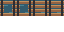

Search the Art Bible
Search works locally, including offline.
Art Bible · Environments
Living Regions: world-state artwork
Related states share a visual contract while gameplay systems retain world-state authority.
Edition 0.1.0 · Owner review pending for new reference art
On this page
State changes need compatible geometry
A broken bridge and its repaired form share canvas dimensions, grid origin, bank connections and root position. Visual damage can remove deck pixels; restoration can add boards and rail modules. The anchor must not move to compensate for a different silhouette. Keep transition boundaries aligned to surrounding terrain.
State art communicates the world’s condition. It does not decide authoritative state, persistence, eligibility or network replication. A gameplay system selects an already-reviewed resource, scene variant or tile replacement. This chapter defines the visual inputs that system can use.

Assign only meaningful states
| Asset pair | Suggested useful states | Preserve / document |
|---|---|---|
| Bridge | Destroyed, under construction, partially restored, restored | Bank edges and deck origin; traversal change explicit |
| Watchtower | Destroyed, damaged, scaffolding, rebuilt | Foundation contact; increased visual height and occlusion |
| Trade road | Dangerous / neglected, cleared, restored | Terrain boundaries; signs and debris independently placed |
| Workshop | Abandoned, partially restored, operating | Door threshold; activity overlays separate |
| Farm | Neglected, prepared, productive | Plot alignment; crop stage and seasonal variants |
| Camp / reclaimed site | Hostile occupation, damaged, reclaimed | Base terrain continuity; approved identity markers only |
Layer and source conventions
Use one source document with named state groups or separate state sources sharing an explicit registration contract. Keep an unchanged foundation or ground layer available for comparisons. Name groups state_destroyed, state_repair and state_restored where useful; export only the selected state. Do not stack all groups visibly by mistake.
A construction state may add scaffolding as an overlay; a reclaimed area may remove hostile signs and reuse existing plants. Avoid giving every object eight arbitrary states. If only the bridge deck changes, keep the bank and support assets shared.
Integration handoff
For every state, record canvas, contact origin, connection cells, layer names, required lower terrain and intended collision/navigation differences. A missing deck can change walkability; decorative moss usually should not. Gameplay and technical-art reviewers decide the final shapes. Record that distinction in the completed delivery.
Godot can present alternate Sprite2D textures, reusable scenes with aligned children, or different TileMapLayer cell selections. Choose the smallest representation that preserves shared coordinates. Do not introduce a second gameplay-state controller merely to swap artwork.
Acceptance at the boundary
- Overlay all state exports at 50% in the authoring tool and compare root and bank pixels.
- Toggle states in the same scene recipe without moving the object. Inspect seams, neighboring objects and ground shadows.
- Review a player behind, in front of and across the object. Capture intended collision differences for the integrator.
- Review color and silhouette in day and night. A damaged state must read through geometry, not solely a red tint.
- Request owner art approval for the state set, then separate engine testing.